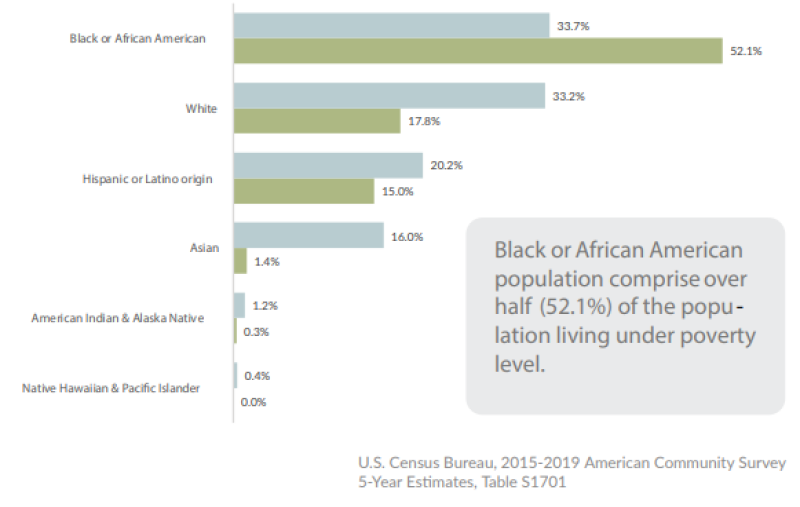
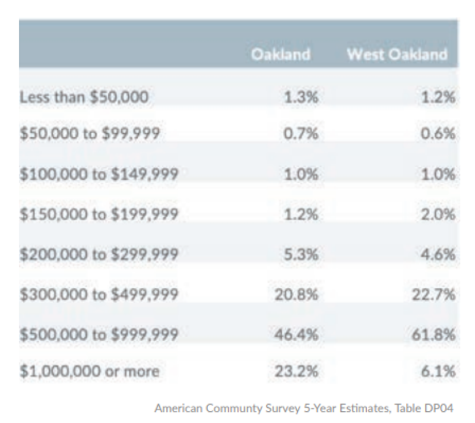
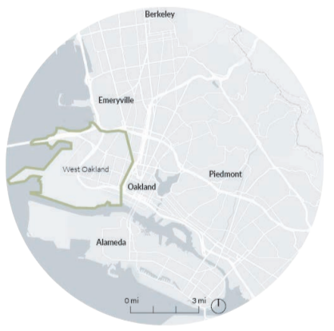

Thanks for visiting
my portfolio —
Oakland, CA
Policy Cartographic & Regional Analysis
of West Oakland
of West Oakland

Overview
01
As part of my Urban Planning Process Studio, I was charged with developing an analysis of the data and plans that represent Oakland’s complex policy ecosystem. The examination ranges from the street scale to the building scale, and eventually conclude at the pedestrian scale.
By studying demographic data, collecting and evaluating planning documents, and develop graphic representations of my findings. The culmination of this exercise provides a basic understanding of Research Design and their findings.
Demographic Analysis
02
Utilizing Census tracts and data, I analyzed the varying percentages of poverty by race, percentages of average home values in West Oakland (in comparison to all of Oakland), and the population change by race from 2010 to 2020. It is integral to understand the demographics of West Oakland in order to assess their policies.
Poverty Status by Race
Average Home Value

West Oakland has a long history of environmental racism and the remnants of redlining and other discriminatory practices still remain today.
The average household income in West Oakland is significantly lower than the City Oakland, and Black or African American population comprises over half (52.1%) of the population living under poverty level, There are more percentages of homes valued in between $500,000 to $999,999, which also increases the risk of displacement for lower-income population. Although more research is needed, this reveals that West Oakland may currently be experiencing gentrification and the Black/African American residents could be at risk of displacement.

While the largest racial group in West Oakland are still Black or African American, the the population has decreased more than 15% while White population increased about 10% from 2010 to 2020.
Timeline of West Oakland Plans
03
By digging into Oakland’s history, I analyzed the impacts of redlining practices such as environmental racism, transportation inequity, and underinvestment in these West Oakland neighborhoods. At the neighborhood scale, there is a lack of greenery and a disproportionately high amount of arterialways.
Mapping Environmental Racism
04
Environmental Justice Organizations
Oakland Rising — Oakland Rising works to educate and give a voice to communities in East and West Oakland. They focus on “flexing people power” and policy advocacy. Additionally, they are a collaborative multiracial and multilingual organization working alongside immigrants and low-income communities to set a progressive and equitable agenda for Oakland.
Center on Race, Poverty, & the Environment — CRPE focuses on environmental justice through sus - tainable communities by providing assistance to grassroots organizations. Some of the grassroots groups they work with target the negative impacts of industrial agriculture in low-income communities, while others focus on climate justice, specifically fighting toxic waste.
Case Studies
21st & West St. — A residential neighborhood is part of the Oakland Slow Streets Program. Majority of houses are single-family Vic - torian housing with many private enclosed yards.
San Pablo & Myrtle — Located on a wide street (San Pablo Avenue) the auto shop is also close to churches, grocery stores, and liquor shops. The area is also surrounded by many parking lots.
Mandela & 13th — Redesigned as part of the Man dela Parkway Redevelopment from the Cypress Freeway Collapse, The parkway has promoted healthy active lifestyles and accessible to public open spaces.
Check out my other projects
05